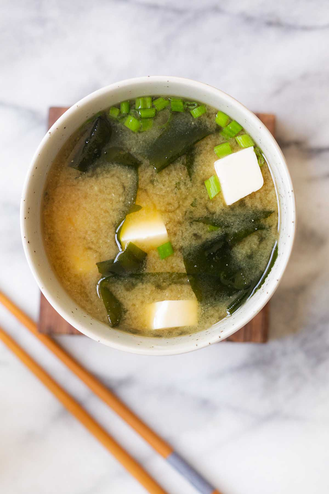

Recipe of the Day

Miso Soup
Learn how to make miso soup at home! We love serving this nourishing, savory soup with shiitake maki for a fun, at-home sushi night.
Ingredients
- 1 (3-inch) piece of Kombu
- 4 cups Water
- 3 tablespoons wakame dried Seaweed
- ¼ cup white Miso paste
- ⅓ cup chopped Scallions
- 6 ounces silken Tofu, cubed
- Tamari, to taste
Prep Time
10 Mins
Cook Time
12 Mins
Instructions
- Gently rinse the kombu piece. Place it in a medium pot with the water and gently simmer for 10 minutes. Don’t let it boil, or the kombu flavor will turn bitter.
- Soak the wakame in a small bowl of warm water for at least 5 minutes to rehydrate.
- Remove the kombu from the soup. In a small bowl, stir the miso paste together with some of the hot broth until the mixture is smooth, then stir it back into the soup.
- Drain the wakame and add it to the soup pot along with the scallions and tofu. Simmer over very low heat for 1 to 2 minutes. Season, to taste, with tamari.